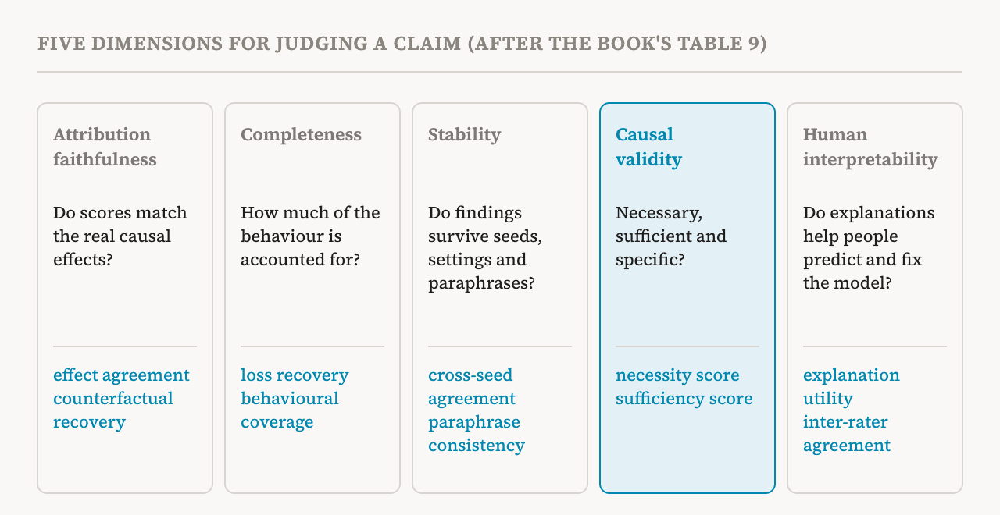
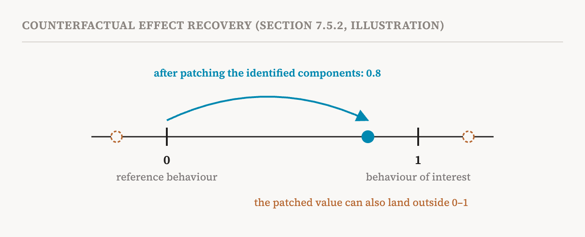

Part 1 said that the book considers evaluation one of the field's most pressing open problems. This part covers the book's own proposal, section 7.5 (pages 58–66), the longest single section on circuits. It is more technical than most of the series, but its message is easy to state and worth remembering: a claim about how a model works should be judged on several separate dimensions, with numbers, against baselines, and with failures reported as plainly as successes.
Why a common yardstick is needed
Different methods are judged with incompatible metrics. Even for the same behaviour, a circuit can be described at the level of MLP and attention modules, of CLT features, or of individual neurons. A CLT-based circuit must also show that the CLT is faithful; a module-level circuit must explain what each node does. So comparing methods, and measuring whether the field is making progress, is hard.
The book names five problems with current practice.
| Problem | What happens |
|---|---|
| Unclear purpose | Methods are built for different aims and judged by different objectives, even when they are used for the same job; SAEs, circuits and steering vectors can all steer a model, but are scored in unrelated ways |
| Cherry-picking | Results are shown on carefully chosen examples or narrow data; failures and coverage go unreported |
| Missing baselines | Gains are not compared with simple alternatives such as behavioural methods, random directions or single neurons |
| Reproducibility gaps | Many settings and costly training steps, sensitive to seemingly irrelevant factors, with reproducibility rarely reported |
| Faithfulness versus understandability | Methods show how readable their outputs are, but less often how faithful they are to the model, which rewards explanations that persuade rather than ones that are true |
The last row is the most important. An explanation can be clear, satisfying and wrong. Some researchers have called for a shared platform for tracking interpretability claims across papers, and others have proposed judging explanations by criteria from the philosophy of science. But the book argues that the field needs concrete, standard protocols, benchmarks and reporting practices, to grow from a collection of promising techniques into a cumulative science.
The common language
The framework uses the language of part 16. "Components" means any unit of analysis: features, neurons, attention heads, circuits or connections. A behaviour of interest is represented by a set of prompts. The intervention effect of a set of components on one input is the change in a behaviour metric when their activations are replaced by reference values, and the average over the prompts gives the effect on the behaviour as a whole.

Dimension 1: attribution faithfulness
Does the method assign importance to the right components? Many methods give each component an importance score; faithfulness checks those scores against the real effects of intervening. Intervention-effect agreement is the correlation between the method's scores and the measured effects across inputs. Effect-size error is the average gap between them, when they are on the same scale. And counterfactual effect recovery asks how much of the difference between two behaviours, say honesty and sycophancy, is reproduced by patching only the identified components from one into the other.

The book flags a practical flaw in that last metric. Its denominator, the gap between the two behaviours, can be close to zero, and the patched value can overshoot either end, so the score can be far above 1 or below 0. A 2026 study by two of the book's authors proposed a bounded version.
Dimension 2: completeness
How much of the behaviour do the identified components account for? For methods that reconstruct activations, such as SAEs and CLTs, loss recovery asks what fraction of the model's performance survives when activations are replaced by reconstructions, measured between the original model and a baseline in which the activations are removed. Behavioural coverage asks on what fraction of prompts the identified components have a meaningful effect at all. Unexplained variance asks how much of the variation in the original activations the reconstruction misses. The protocol also asks researchers to analyse the inputs where coverage or reconstruction is poor, not only the averages.
Dimension 3: stability
Do the findings survive changes that should not matter? Cross-seed agreement runs the method several times with different random seeds and measures how well the resulting features or circuits match; part 12 showed why this matters for SAEs. Hyperparameter sensitivity measures how much a result swings across reasonable settings. Paraphrase consistency checks whether an intervention has the same effect when the prompt is reworded without changing its meaning. The protocol asks researchers to separate robust findings from fragile ones, and to report both.
Dimension 4: causal validity
Are the components necessary, sufficient and specific? These are the tests of part 18, made into scores. The necessity score is the fraction of performance lost when the components are ablated. The sufficiency score is the fraction kept when only the components remain active. Specificity measures whether intervening on the components affects the target behaviour rather than a set of control behaviours. The protocol adds an important control: compare against ablating or keeping random sets of components of the same size, because removing any large chunk of a model may hurt it. An interchange test, swapping activations between inputs of different behaviours, completes the set.
Several benchmarks already test causal validity: MIB for circuits and causal variables, AxBench for steering towards concepts, RAVEL for locating features of given concepts, and SAEBench for sparse autoencoders, which pairs reconstruction metrics with downstream tasks such as removing gender bias.
Dimension 5: human interpretability
Do the explanations actually help people? Explanation utility measures how much better people predict the model's behaviour on new inputs with the explanation than without it. Debugging utility measures how much more often they manage to identify and fix the model's errors. Consistency of interpretation measures whether different people read the same explanation the same way. The book admits the difficulties: human studies are expensive, and expertise confounds them, since an explanation clear to an interpretability researcher may be opaque to a domain expert, and vice versa.
Applying the framework
The book also suggests what matters most for different families of methods. For SAEs: agreement between feature attributions and interventions, reconstruction and loss recovery, alignment of features across seeds, necessity and sufficiency of features, and whether people and models describe features consistently. For circuit discovery: counterfactual recovery, behavioural coverage, robustness to seeds, settings and paraphrases, interchange tests, and the trade-off between how small a circuit is and how much it explains. For probes and steering vectors, a recurring item is to look for confounding factors in the data used to fit them, the shared information that a direction might really be picking up.
And it gives a five-step protocol.
| Step | What to do |
|---|---|
| 1. Define scope | Fix the model, layers and behaviours, and a behavioural test suite with clear criteria for success |
| 2. Establish baselines | Choose comparisons such as random directions, PCA components, single neurons and supervised probes |
| 3. Apply the method | Run it with varied random seeds, settings and other training details |
| 4. Evaluate all five dimensions | Compute metrics for faithfulness, completeness, stability, causal validity and human interpretability |
| 5. Report comprehensively | Report all five, not only the favourable ones, with failures, unexplained behaviours and baseline comparisons |
The framework's own limits
The book is frank about the limits of its own proposal. The particular metrics are not the only reasonable ones. Thresholds for success lack theoretical grounding and must be calibrated empirically. Evaluating all five dimensions is expensive and may be prohibitive at scale. Human evaluation is slow, costly and subjective. And results depend on the task: a method that does well on recalling facts may do poorly on reasoning. Its conclusion is that systematic evaluation across several dimensions still gives more reliable evidence than an arbitrary choice of metrics, and that the framework should be read as a starting point for standardisation, not a final answer.
The end of the circuits group
With this, the book's chapter on circuits closes. Chapter 6 found units of analysis; chapter 7 showed how those units interact through circuits to produce behaviour, how to check them, and how to grade any such claim. The next group of parts takes a complementary approach: instead of breaking activations into parts, it reads the information in an activation directly, often in natural language.
| Term | Meaning |
|---|---|
| Intervention effect | The change in a behaviour metric when some components' activations are replaced |
| Attribution faithfulness | Whether a method's importance scores match the real effects of intervening |
| Counterfactual effect recovery | How much of the gap between two behaviours patching the identified components closes |
| Completeness | How much of the behaviour the identified components account for |
| Loss recovery | The share of performance kept when activations are replaced by reconstructions |
| Behavioural coverage | The share of prompts on which the components have a meaningful effect |
| Stability | Whether findings survive new seeds, settings and paraphrases |
| Causal validity | Whether components are necessary, sufficient and specific for the behaviour |
| Specificity | Whether an intervention affects the target behaviour rather than others |
| Human interpretability | Whether explanations help people predict, debug and agree about the model |
| Baseline | A simple comparison, such as random directions or single neurons, that a method should beat |
| Inter-rater agreement | How consistently different people interpret the same explanation |
Next, part 21 opens the group on reading the middle of a model, with lenses that turn intermediate activations into predictions.